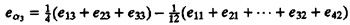
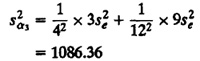

| Previous | Table of Contents | Next |
SSY = SS0 + SSA + SSE
N = 1 + (a - 1) + N - a
12 = 1 + 2 + 9
The ANOVA is shown in Table 20.9. Notice that the variation due to processors is insignificant as compared to that due to modeling errors. Confidence intervals for processor effects can be obtained after computing their standard deviations using expressions given in Table 20.6. To understand how these expressions are derived, consider the effect of processor Z. Since,
The error in α3 is the weighted sum of errors in the observations on the right-hand side of the preceding equation:

Since eij’s are normally distributed with zero mean and an estimated variance of s2e, the variance of eα3 (and hence that of α3) is

It is easy to verify that the value computed here is the same as that obtained from the expression in Table 20.6.
The key results related to the analysis of one-factor experiments are summarized in Box 20.1.
|
Box 20.1 Analysis of One-Factor Experiments
|
20.1 For a single-factor design, suppose we want to write an expression for αj in terms of yij’s:
αj = a11jy11 + a12jy12 + ... + arajyra
What are the values of the a..j’s? From the preceding expression, the error in αj is seen to be
eαj = a11je11 + a12je12 + ... + arajera
Assuming errors eij are normally distributed with zero mean and variance σ2e, write an expression for the variance of eαj . Verify that your answer matches that in Table 20.5.
| Previous | Table of Contents | Next |